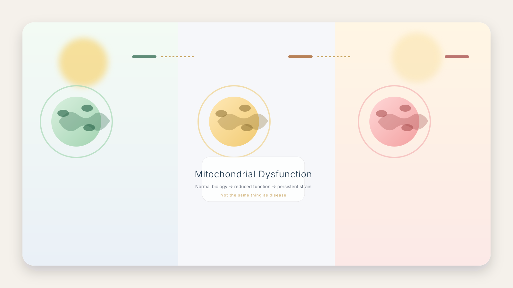

What Is Mitochondrial Dysfunction?
Mitochondrial dysfunction means the body's energy system is no longer producing energy as efficiently as it once did. The machinery is still there. The cells are still alive. But the system is working harder to produce less.

Why this matters
Not every energy problem is a disease.
A person can experience poor recovery, fatigue, reduced exercise tolerance, or slower healing without a diagnosed mitochondrial disease.
That is why dysfunction and disease should never be treated as the same thing. One describes how the system is performing. The other describes a medical diagnosis.
Mitochondria are normal cell structures. Their job is energy production and cellular support.
Dysfunction means the energy system is not working as efficiently as the cell needs.
Disease is a broader clinical diagnosis that may involve symptoms, organ systems, and testing patterns.
Why people care about mitochondrial dysfunction
Most people never search for mitochondrial dysfunction because they are interested in biology.
They search because something feels different. Recovery takes longer. Energy feels harder to maintain. Exercise feels more expensive. The body no longer rebounds the way it once did.
That experience does not automatically mean disease. But it does explain why mitochondrial function has become an important area of research in aging, metabolism, recovery, and chronic illness.
What this does not mean
- It does not mean a person has a confirmed mitochondrial disease.
- It does not mean fatigue alone is enough to explain the problem.
- It does not replace medical evaluation or specialist testing.
- It does mean the body's energy system deserves a closer look.
Real human experience
People rarely describe mitochondrial dysfunction in scientific language. They describe it in terms of life: the trip that now takes days to recover from, the exercise that used to feel easy, the workday that suddenly feels exhausting, or the hobbies that quietly disappear.
The feeling is often not just fatigue. It is the sense that the body is asking for more recovery than it once needed.
Those experiences do not prove a diagnosis. But they explain why the body's energy system matters so much.
What readers should remember
Mitochondrial dysfunction is not a disease. It is a description of how the body's energy system is performing.
The important question is not whether dysfunction exists. The important question is why.
Understanding that difference is the foundation for understanding fatigue, recovery, metabolism, aging, and mitochondrial disease.
Common questions
Is mitochondrial dysfunction the same as mitochondrial disease?
No. Dysfunction is a functional description. Disease is a clinical diagnosis group that may involve dysfunction but is broader.
Can dysfunction happen without disease?
Yes. It can appear secondarily in other illnesses, aging, inflammation, medications, infection, or stress states.
Can dysfunction be reversed?
Sometimes the underlying cause can be treated or improved, but that depends on the reason the dysfunction is happening.
Should fatigue be assumed to be mitochondrial dysfunction?
No. Fatigue is common and has many causes. Persistent symptoms deserve medical evaluation rather than self-diagnosis.